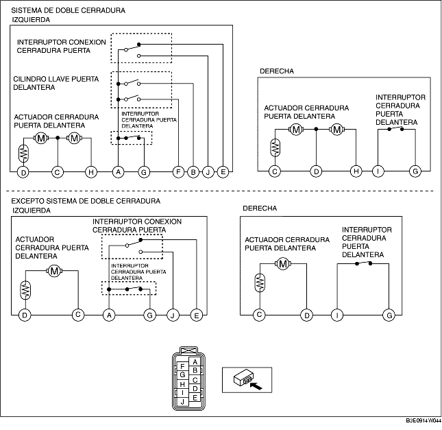

CONTROL ACTUADOR CERRADURA Y PESTILLO PUERTA DELANTERA
B3E091458490W04
1. Los siguientes actuadores e interruptores están integrados con el actuador cerradura y pestillo puerta delantera. Controlar el actuador cerradura y pestillo puerta delantera según los procedimientos de control de los siguientes componentes.
-
• Actuador puerta delantera (Véase CONTROL ACTUADOR CERRADURA PUERTA DELANTERA).
-
• Interruptor pestillo puerta delantera (Véase CONTROL INTERRUPTOR PESTILLO PUERTA DELANTERA).
-
• Interruptor cilindro llave puerta delantera (Véase CONTROL INTERRUPTOR CILINDRO LLAVE PUERTA DELANTERA).
-
• Interruptor de conexión de la cerradura de la puerta (lado conductor) (Véase CONTROL INTERRUPTOR CONEXION CERRADURA PUERTA).
